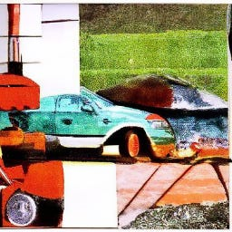

minimalpriora spinoff |
Updated | ||
|---|---|---|---|
| Author | Jan Kirchner | ||
#IAN says: The problem with being a “good person” is that you never have enough energy left over for doing really evil things.
Imagine the following: It is the year 2012 and you have been invited to a fancy conference dinner in Cambridge. There is champagne and you are feeling great. Stephen Hawking is here, good grief! You feel like you have made some real progress today, with so many interesting talks and discussions. You even managed to plug your latest paper to one of the conference chairs. All is well. Suddenly a sheet of paper drifts into your field of view. A declaration on the topic of the conference - animal consciousness. You eagerly sign (eleven other people already did). It’s probably alright, you think. Science is about discourse. We are just stating our position…
A picture of a fancy conference dinner with champagne. CLIP Guided Diffusion.
In 2012, a group of neuroscientists signed the Cambridge Declaration on Consciousness, which “unequivocally” asserted that “humans are not unique in possessing the neurological substrates that generate consciousness.” Wikipedia
The subsequent news cycle is as wild as you’d predict. Here’s New Scientist:
” Animals are conscious and should be treated as such “.
and LiveScience:
” After 2,500 Studies, It’s Time to Declare Animal Sentience Proven “.
The declaration has also made it into the reports of some of our favorite effective altruism organizations. Here’s the Cause Profile on effectivealtruism.org:
” Many experts now believe that animals have conscious experiences ”
and (in a footnote of) the Founder’s PledgeAnimal Welfare Cause Report:
Similarly, the Cambridge Declaration on Consciousness, an important collection of “unequivocal” statements made by a group of prominent neuroscientists in 2012, noted that “the weight of evidence indicates that humans are not unique in possessing the neurological substrates that generate consciousness”.
However, not everybody is as convinced by the declaration. Luke Muehlhauser is characteristically awesome by providing a nuanced take in the Report on Consciousness and Moral Patienthood, listing three caveats:
1. The document reads more like a political document than a scientific document. (See e.g. this commentary.)
2. As far as I can tell, the declaration was signed by a small number of people, perhaps about 15 people, and thus hardly demonstrates a “scientific consensus.”
3. Several of the signers of the declaration have since written scientific papers that seem to treat cortex-required views as a live possibility, e.g. Koch et al. (2016) and Laureys et al. (2015), p. 427.
The commentary cited in point 1 is an interesting read, although sometimes bordering on the polemic:
What is the Declaration for, and what will it be used for? I presume the aspiration is that it will be cited wherever the treatment of animals is an issue. Its function is surely meant to be to give clarity, but to do it by curtailing argument; to end discussion. That’s certainly liable to be the way it is used, at any rate. I don’t like that at all; there are cases where it’s legitimate to try to close down an area of discussion, but I don’t think this is one; the attempt is at best radically premature, at worst profoundly unhelpful. If anything we should be promoting discussion. Wouldn’t it have been better, and more appropriate to Crick’s memory, if the participants in the Conference had, in that spirit, published a list of good questions?
I’ve also asked a couple of colleagues in the field about their opinion on the declaration and got responses like these:
Doesn’t make sense to me, and I think they could have written the document better and cited their sources more responsibly.
It’s important to take into account the state of mind the author was in when writing the article: intoxicated by success and champagne.
I’m not sure about the declaration… But anyway, Stephen Hawking was present when they signed it, so it must be legit.
“A photorealistic picture of Stephen Hawking signing a declaration.” CLIP Guided Diffusion.
#IAN says: “[T]he physical world is what it is, and whatever else it may be, it is not conscious.”
Okay, okay, now this post is getting polemic also. Sorry about that. Really, I don’t even have a very strong opinion on this. I’m not working on the neuroscience of consciousness and (to be frank) I don’t get the literature on the topic. Most things I’ve skimmed don’t provide definitions or quantifications and the few “mathematical” theories of consciousness appear to be deeply flawed and confused.
In contrast, eliminative materialism, the
” radical claim that our ordinary, common-sense understanding of the mind is deeply wrong and that some or all of the mental states posited by common-sense do not actually exist and have no role to play in a mature science of the mind ”
, does not actually sound very radical to me.[1] This position appears to be (based on my observations) the position implicitly adopted by many of my colleagues in the field. Our (non-technical) intuitions about how the mind ought to work consistently lead us astray and are not useful guides when trying to understand complex systems[2]. There is no principled reason why an overloaded concept like consciousness should have a distinct neural correlate. It appears much more likely that (as we understand more and more of the brain) the questions about consciousness will simply dissolve and be replaced by more tractable questions.
[1]
My intuition largely comes from reading “Vehicles” by Valentino Braitenberg, which does a tremendous job at demonstrating how an automaton programmed with very simple instructions performs complex behavior that deludes us into attributing higher cognition to the simplest automaton. This is a bit ironic since Braitenberg is the Ph.D. advisor of Christof Koch, one of the famous editors and signatories of the Cambridge Declaration. Or perhaps it’s not ironic but just appropriate.
[2]
There is an exciting new approach that rejects a characterization of cortical areas “based on definitions of putative functions inherited from psychological traditions” in favor of a more principled phylogenetic approach. I am very excited about this stuff.
An abstract painting of a Braitenberg vehicle. CLIP Guided Diffusion.
The question implicit in all the news articles and reports cited in the first section is: How should we treat animals? This question can be instantiated without reference to consciousness[3] and the process of doing so will force us to confront our implicit assumptions and conceptual confusions. This is an important and worthwhile project, but not the topic of this post[4]. Here I only want to declare that the Cambridge Declaration On Consciousness should not be used for a “proof by authority”. The term “scientists agree” must be reserved for cases where it actually applies (evolution, vaccines, climate change), otherwise it will lose its punch.
[3]
I subscribe to the action items proposed by people working on animal welfare - mass farming is an abomination, eating animal products is gross and donating to animal welfare charities is (probably) a good idea.
[4]
A post on that topic is in the pipeline, however :)
So in this post, I propose the “Frankfurt Declaration on the Cambridge Declaration on Consciousness”[5]. It is even shorter than the original and just reads:
[5]
I am acutely aware of the irony that a declaration in favor of consciousness would come out of Cambridge (the cradle of analytic philosophy) and that I’m writing my declaration from Frankfurt (that German town known for… not being the cradle of analytic philosophy). Or perhaps it’s not ironic but just appropriate.
I, a published neuroscientist, don’t understand the neuroscientific literature on consciousness. I do not know whether animals (including humans) are conscious or not or whether that question even makes sense. I could not have signed the Declaration On Consciousness in good conscience.
I hope this statement serves as a “The Emperor’s New Clothes”-type declaration and that I will not embarrass myself with bravado. I realize that I’m punching a bit above my weight here and that the signatories of the original declaration are a lot more tenured and distinguished than I am. At the same time, a professor I admire recently said that the amount of influence a researcher gains over the course of their career does not grow exponentially, but actually rather sub-linearly. So if you have something to say, just go for it. It doesn’t make too much sense to wait until you are more distinguished.
A painting of a very powerful and distinguished scholar. CLIP Guided Diffusion.
For more essays and guided strolls through mind space, consider signing up to the mailing list so that you are notified whenever a new post is published (currently every weekend):